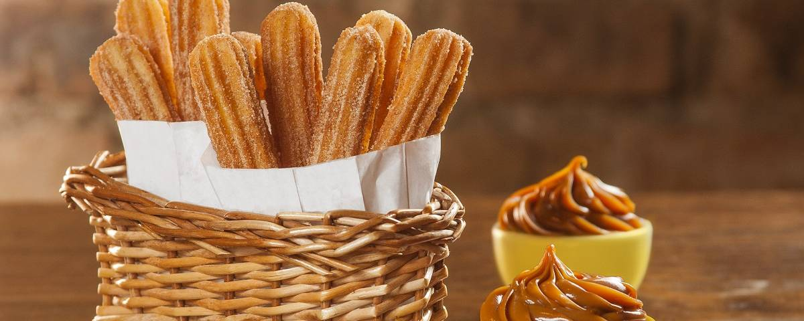

Churro é um alimento de origem ibérica, preparado com massa à base de farinha de trigo e água, em formato cilíndrico e frito em óleo vegetal. Logo após, pode ser salpicado com uma camada de açúcar por fora (opcionalmente, também com canela).
O churros é uma iguaria que existe há muitos séculos. Sua origem é incerta. Alguns dizem que foram os portugueses que trouxeram a receita, quando voltavam da China na época da dinastia Ming. Outros dizem que foram os árabes que a trouxeram, quando invadiram a península ibérica. Outros ainda, afirmam que foram os pastores espanhóis que inventaram a receita, porque era fácil de fazer no alto das montanhas onde eles não conseguiam obter pão fresquinho e outros produtos de padaria.